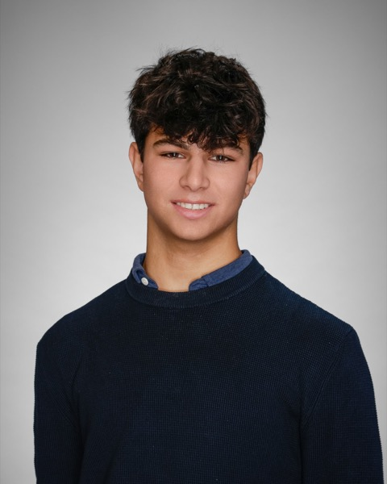
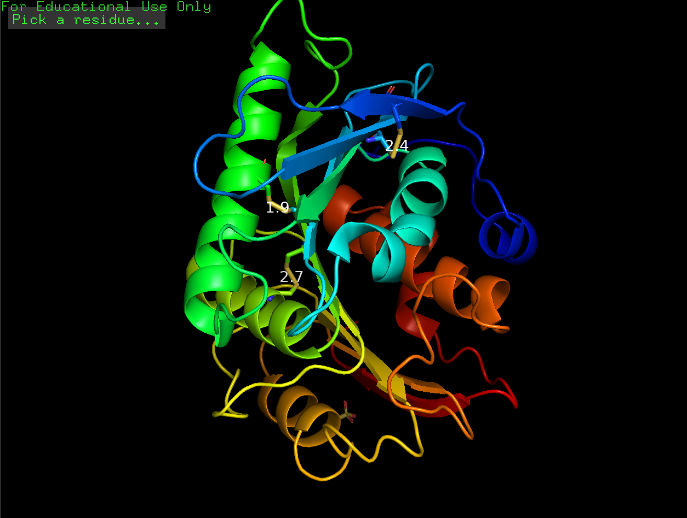
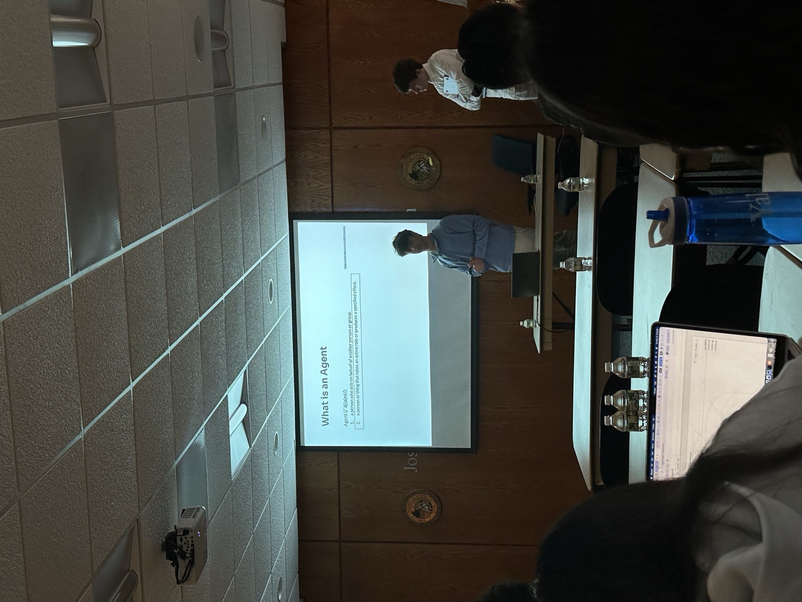
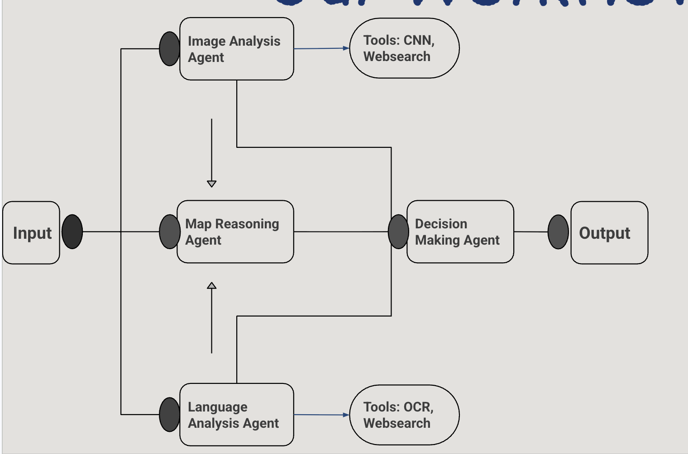
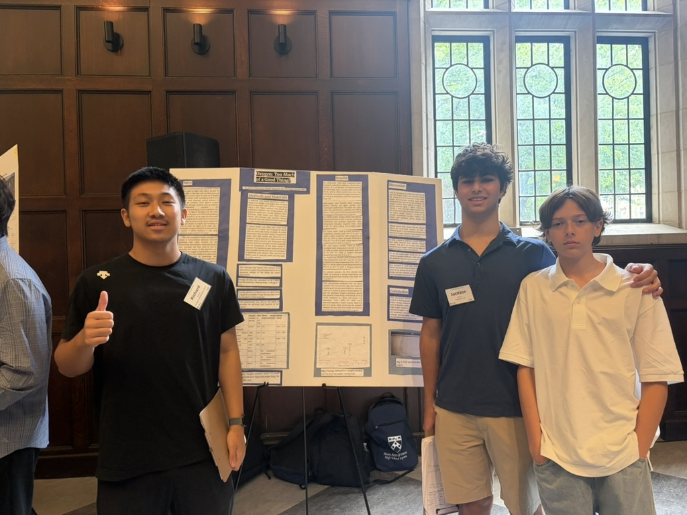
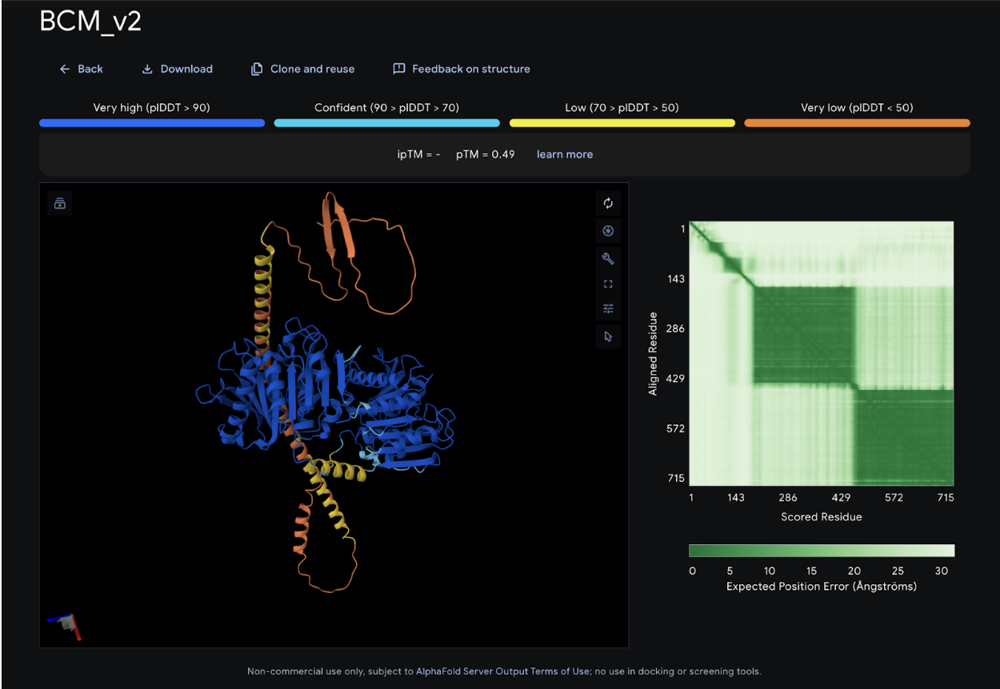
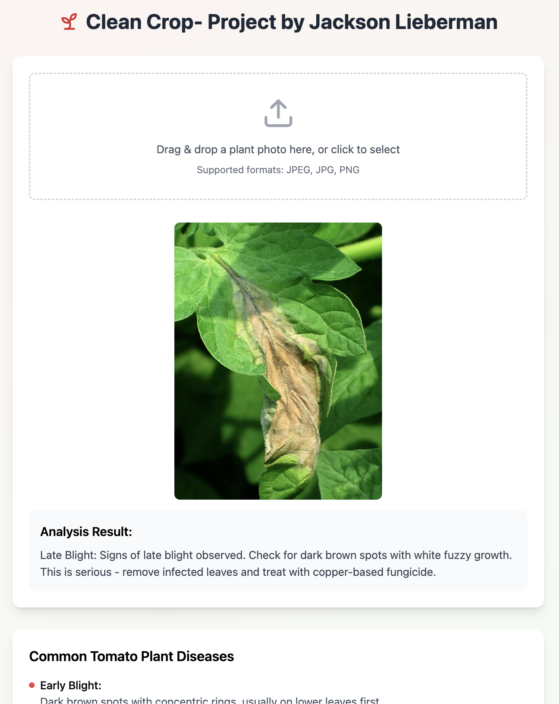

Senior · Greenwich Country Day School · Chemical Engineering, AI & Plastics Recycling
I'm a high school senior working where chemistry, machine learning, and engineering meet. For the past two years I've been engineering more heat-stable variants of FAST-PETase, an enzyme that breaks down plastic, first in simulation and now in a wet lab. Running that design-test-repeat loop by hand showed me the real bottleneck isn't the chemistry but the slow pace of testing, so I want to build AI systems that tell scientists which proteins are worth making.
Outside the lab I build software (including SquashLab, a computer-vision squash coaching app), work on local policy through the Greenwich First Selectman's Youth Commission, and coach and play squash. I plan to study Chemical Engineering in college.

Engineered disulfide bonds into FAST-PETase and tested 8 variants with molecular dynamics. The best variant stayed stable from 50 to 70 °C. Written up as a ChemRxiv preprint; CSEF Finalist.
An app I founded that scores squash swing technique from a phone video and coaches the player. Over 1,000 downloads in its first month; I reached out to 100+ professional players.
Taking my simulated variants into the lab at GenSpace in Brooklyn: expressing and purifying them in E. coli, then measuring whether they hold up at higher temperatures.
Read more →
Co-organized a workshop at Greenwich Town Hall where nearly 50 students from 9 schools built their own AI stock-prediction agent, alongside two J.P. Morgan VPs and a private equity founder.
Read more →
A multi-agent AI system, built in a team of four, that locates GeoGuessr images using agents for image analysis, language detection, and geographic reasoning. Studied by Canada's national GeoGuessr team.

Led a team of three measuring how oxygen content limits lignin as jet fuel, using calorimetry, FTIR, and regression: about 1.1 kJ/g gained per 10% of oxygen removed. Published in Spectral Insights; presented at UPenn.
Topic modeling (STM, keyATM, BERTopic) of national education documents across about ten countries, testing whether "human capital" language has displaced civic and humanistic ideas of what school is for.
Read more →Research intern: supplied data from my PETase research to benchmark ChemOrchestra, a computational chemistry platform, and helped plan its first bio-hackathon.
Read more →
A modular fusion enzyme, designed with AlphaFold, for breaking down PET blends and adhesive laminates.
Read more →
A convolutional neural network in Python and TensorFlow that identifies crop diseases and suggests treatments, motivated by research on crop disease and world hunger.
Try it →Python programs that measure word frequency and themes (love, power, revenge, hate) across 20+ plays, with CSV output and matplotlib charts.
Read more →A dimensional analysis calculator built in Python for chemistry class.
Try it →Self-taught, self-directed project computationally engineering more thermostable PETase variants with disulfide bonds. Published a ChemRxiv preprint and built a network of mentors, including members of the BOTTLE Consortium. Project page →
Validating my simulated PETase variants at the bench: expression, purification, and stability testing. Project page →
Provided research data to benchmark ChemOrchestra's models and helped plan the company's first bio-hackathon. Project page →
Led a team of three studying lignin as sustainable jet fuel (FTIR, calorimetry, regression); presented at the UPenn Chemistry Symposium and published in Spectral Insights. Project page →
Led a group of 15 to draft a bill for a statewide ban on disposable vapes, which are plastic, chemical, and e-waste all at once, paired with youth education. Met with state representatives, presented at a state legislative forum, and built a subcommittee to carry the bill into the next legislative cycle.
Helped turn a finance course into a finance-and-AI workshop and taught agentic stock prediction to nearly 50 students from 9 schools. Event page →
Led 10 students in creating a community event that connects young kids with local police.
Worked with administrators to redesign the school's research program, from course design to events, and helped teach classes.
Built a year-round content calendar for a local waste-reduction nonprofit, helped plan the ReThink Waste Fair, and presented my plastics research there. More →
Helped rebuild the program after a last-place finish at High School Nationals, growing the roster from 7 players to a full team with competitive tryouts. Led preseason coaching and training; seeded as high as #2.
Lead coach for groups of 10 kids at a time (about 100 a day, ages 5–14); designed drills for skill and strength. Received the Coaches Award.
Defended the title two years in a row, undefeated.
Left back for GCDS varsity soccer. American Red Cross certified lifeguard (CPR/AED, First Aid).
Email: jacksonslieberman at gmail dot com
GitHub: github.com/Jackson-Lieberman
LinkedIn: linkedin.com/in/jackson-lieberman